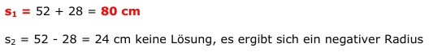

Aufgabe 166 Eine Sehne hat zum Kreismittelpunkt einen Abstand von 9 cm und ist 39 cm länger als dessen Radius. Wie lang ist die Sehne? Die Sehne sei s s = (r + 39) cm |-39 r = s - 39 Satz von Pythagoras: s r2 = 92 + (---)2 2 Eingesetzt: s2 (s - 39)2 = 81 + ---- 4 s2 s2 - 78s + 1521 = 81 + ---- |*4 4 4s2 - 312s + 6084 = 324 + s2 |-s2 3s2 - 312s + 6084 = 324 |-324 3s2 - 312s + 5760 = 0 |:3 s2 - 104s + 1920 = 0 p, q - Formel p = -104 ; q = 1920  s1,2 = 52 ± 28 s1 = 52 + 28 = 80 cm s2 = 52 - 28 = 24 cm keine Lösung, es ergibt sich ein negativer Radius